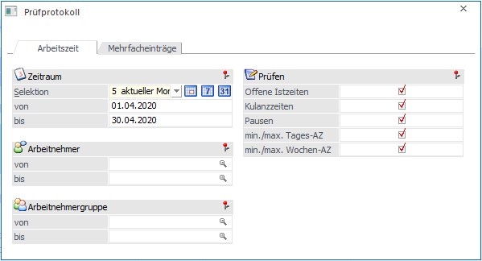
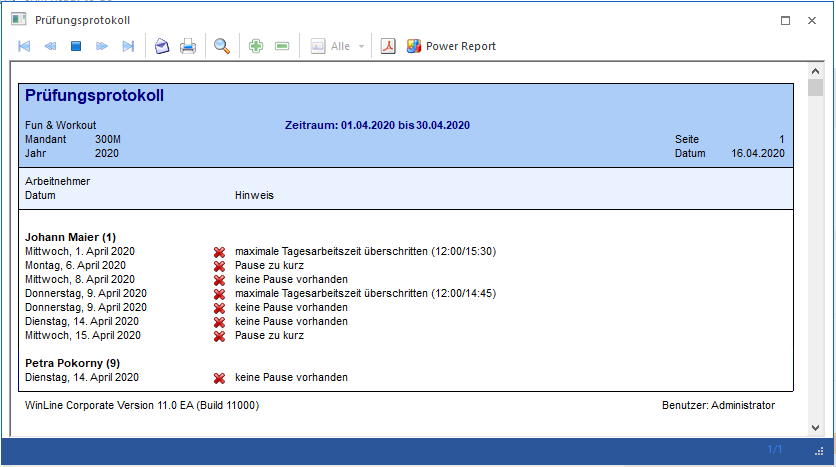
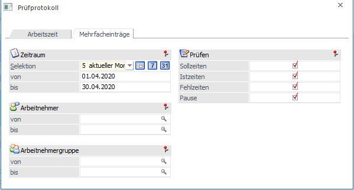
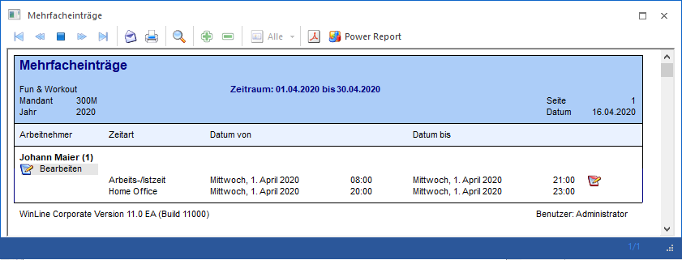
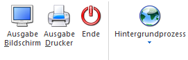

Im WinLine INFO unter dem Menüpunkt
1 SMART
1 Zeiterfassung
1 Prüfprotokoll
werden die tatsächlichen Arbeitszeiten (Ist-/Arbeitszeit, Fehlzeit usw.). auf Basis des Arbeitszeitmodelles geprüft und als Protokoll ausgegeben.

Das Fenster ist in 2 Registern gegliedert.
ü Arbeitszeit
ü Mehrfacheinträge
Arbeitszeit
Ø Selektion
Über eine Auswahllistbox kann der Zeitraum selektiert werden, dabei stehen folgende Zeitraumselektionen zur Verfügung:

Zusätzlich stehen noch 3 weitere Buttons, mit denen man den Zeitraum schnell ändern kann.
ü Heute
ü aktuelle Woche
ü aktueller Monat
Nach der Auswahl eines Zeitraums werden die Felder "von" und "bis" automatisch neu berechnet und können manuell noch editiert werden.
Ø Arbeitnehmer von / bis
Über den Matchcode oder der Autovervollständigung kann auf die Arbeitnehmer bzw. Mitarbeiter eingrenzt werden.
Ø Arbeitnehmergruppe von / bis
Über den Matchcode oder der Autovervollständigung kann auf die Arbeitnehmergruppe eingrenzt werden.
Ø Prüfen
Hier kann eingestellt werden, welche Zeiten geprüft werden sollen.
ü Offene Istzeiten
ü Kulanzzeiten
ü Pausen
ü min./max. Tages-AZ
ü min./max. Wochen-AZ
Bei der Ausgabe am Bildschirm oder Drucker wird das Protokoll ausgegeben.

Mehrfacheinträge
In diese Register können alle Zeitarten aufgelistet werden, die doppelt vorhanden sind oder die sich überschneiden.

Ø Selektion
Über eine Auswahllistbox kann der Zeitraum selektiert werden, dabei stehen folgende Zeitraumselektionen zur Verfügung:
Zusätzlich stehen noch 3 weitere Buttons, mit denen man den Zeitraum schnell ändern kann.
ü Heute
ü aktuelle Woche
ü aktueller Monat
Nach der Auswahl eines Zeitraums werden die Felder "von" und "bis" automatisch neu berechnet und können manuell noch editiert werden.
Ø Arbeitnehmer von / bis
Über den Matchcode oder der Autovervollständigung kann auf die Arbeitnehmer bzw. Mitarbeiter eingrenzt werden.
Ø Arbeitnehmergruppe von / bis
Über den Matchcode oder der Autovervollständigung kann auf die Arbeitnehmergruppe eingrenzt werden.
Ø Prüfen
Hier kann eingestellt werden, welche Zeiten auf doppelte bzw. Mehrfacheinträge geprüft werden sollen.
ü Sollzeiten
ü Istzeiten
ü Fehlzeiten
ü Pause
Hinweis
Die Optionen werden benutzerspezifisch gespeichert.
Bei der Ausgabe am Bildschirm oder Drucker wird das Protokoll ausgegeben.

Buttons in der Auswertung
Ø Alle Einträge bearbeiten
Über diesen Button werden alle Einträge des Arbeitnehmers bzw. Mitarbeiters im Menüpunkt "Zeitmanagement" geladen.
Ø Überschneidende Einträge bearbeiten
Mit diesem Button werden nur jene Zeilen des Arbeitnehmers bzw. Mitarbeiters im Menüpunkt "Zeitmanagement" geladen, welche sich auch überschneiden.
Nach dem Speichern im Zeitmanagement werden das Protokoll neu ausgegeben.
Buttons

Ø Ausgabe Bildschirm
Mit Hilfe des Buttons "Ausgabe Bildschirm" oder der Taste F5 wird die Auswertung am Bildschirm ausgegeben.
Ø Ausgabe Drucker
Durch Anwahl des Buttons "Ausgabe Drucker" wird die Auswertung am Drucker ausgegeben.
Ø Ende
Durch Drücken des Buttons "Ende" bzw. der Taste ESC wird das Fenster geschlossen.